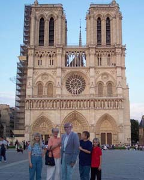
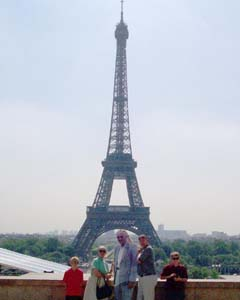
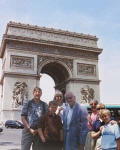
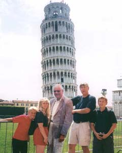
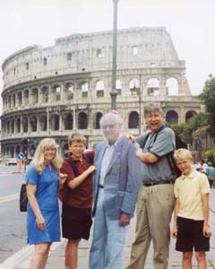
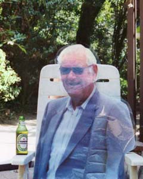

I think the story of my Dad's trip to Paris is cute enough for it's own web page.
In a way, it began on our previous family vacation to London and Scotland, in 2000. It was our first vacation as an extended family -- me, my wife and kids; my sister Susan from Dallas, and my parents from Florida. The kids traveled well, we got lucky with our activities and lodging, and we all had a blast. From the moment we returned home we were looking forward to the next family adventure.
In 2002 we decided the timing was right for that next trip. During January and February, we focused on Paris and Italy, booked accommodations, and arranged our itineraries. By spring our trip was all set.
Then, a few weeks before our departure, Dad was diagnosed with Atrial Fibrillation. This condition is very treatable, and his doctors immediately began working up a mixture of powerful drugs. Dad was initially ready to cancel his trip, but at our urging made no decision until the last possible moment. Finally, two days before his plane flight, he was forced to cancel -- he didn't want to be away from home while his doctors were still fine-tuning his prescriptions. He urged Mom to keep her itinerary, and with the doctor's encouragement, she flew alone to meet us in Paris.
Soon after Dad's heart condition was diagnosed, I had an inspiration to make a life-sized poster of him to carry on the trip. I sorted through my photos from our 2000 vacation, and found a head-to-toe snapshot of Dad, with Scott at Stonehenge.
Nancy had access to a printer at CSULA that could print giant posters on a roll of butcher paper. I scanned Dad's photo at my highest resolution, and used Photoshop to crop his outline. I chopped up the scan to fit the 36"x50" size poster that the giant printer made.
Once I had a life-sized printout, I cut apart the fragments and taped them in the right order. I found a fifty-foot roll of self-adhesive lamination, and encased the printout in plastic. The finished poster could roll up and fit in a piece of 4" PVC pipe.
Once our vacation began without Dad, I carried that poster everywhere in my backpack. We all had fun with it, and the kids enjoyed the ritual of unrolling "Granpa" in front of all the major tourist sights for a family pose. We enjoyed the stares our little circus received, and whenever anyone asked us what we were doing, our story always got a smile.
|  |  |  |
I had brought a digital camera with me to Paris. The lens stopped opening after a couple of days, but I thought I could still download the eight photos I had already taken. I tried several internet cafe's without finding a computer that would allow me to connect my camera. But finally, just around the corner from Mom's apartment, I stumbled into a little hole-in-the-wall with a compatible setup. A couple of days after Father's Day, I was able to e-mail Dad a belated greeting from Paris, with the photo of him posed in front of Notre Dame.
|  |  |  |
After our return, Susan's company held a photography contest for it's employees. Susan's version of our family with Granpa in front of the Leaning Tower of Pisa won her the First Prize -- everybody seems to love our little story.